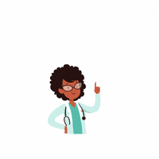

Servicios de Telemedicina, Telesalud y Teleconsulta

Telemedicina
Definición
Servicio clínico a distancia mediante tecnologías digitales que permite evaluación, seguimiento y orientación médica.
¿Cómo funciona?
✓ Solicitud de cita.
✓ Programación digital.
✓ Videollamada médica.
✓ Evaluación clínica.
✓ Seguimiento remoto.
Dirigido a:
✓ Pacientes preoperatorios.
✓ Pacientes postoperatorios.
✓ Personas con dificultad para desplazarse.
Tecnología:
Google Meet.
Zoom.
Microsoft Teams.

Telesalud
Definición
Uso de tecnologías digitales para promoción, prevención y educación en salud.
Incluye:
✓ Artículos educativos.
✓ Infografías.
✓ Consejos preventivos.
✓ Charlas virtuales.
Dirigido a:
✓ Pacientes.
✓ Familiares.
✓ Comunidad general.
Tecnología:
Página web.
Blog educativo.
Correo electrónico.
Redes sociales.
Teleconsulta
Definición
Consulta médica realizada mediante medios digitales.
Modalidad sincrónica:
Videollamada en tiempo real entre médico y paciente.
Modalidad asincrónica:
✓ Mensajería.
✓ Envío de resultados.
✓ Revisión de documentos.
Tecnología:
WhatsApp Business.
Correo electrónico.
Videoconferencias.